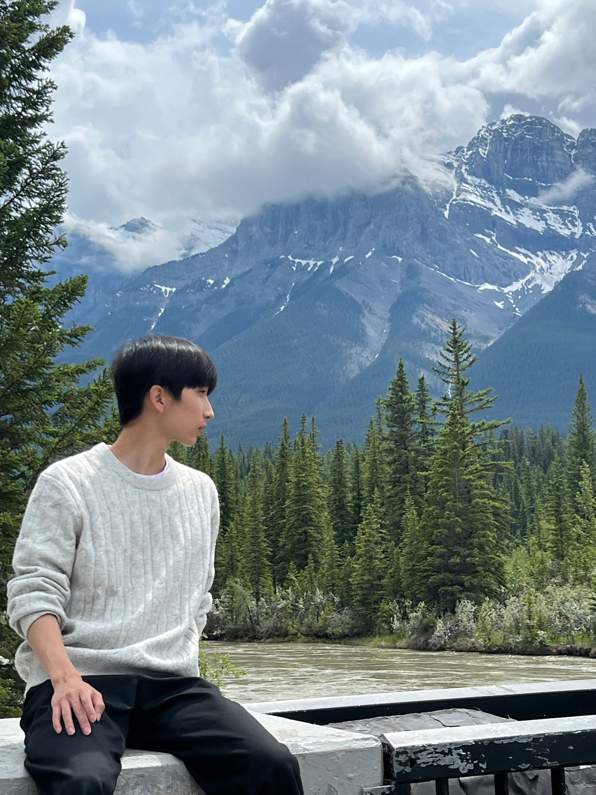
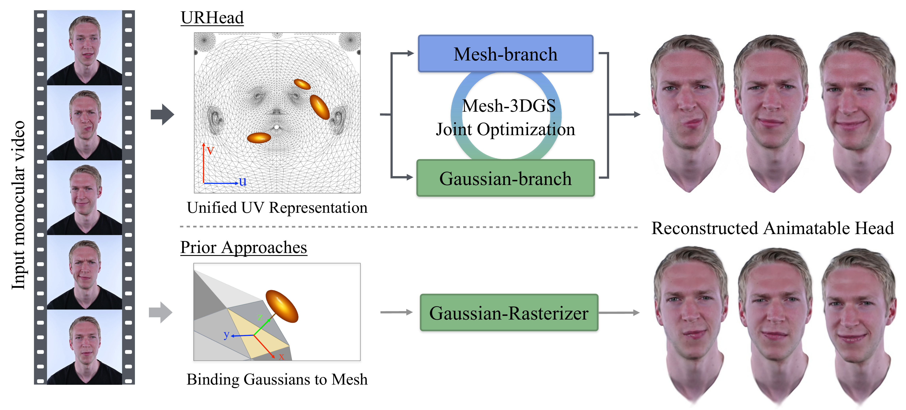
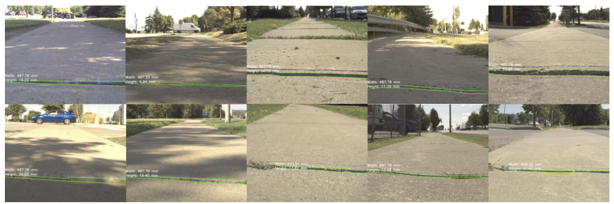
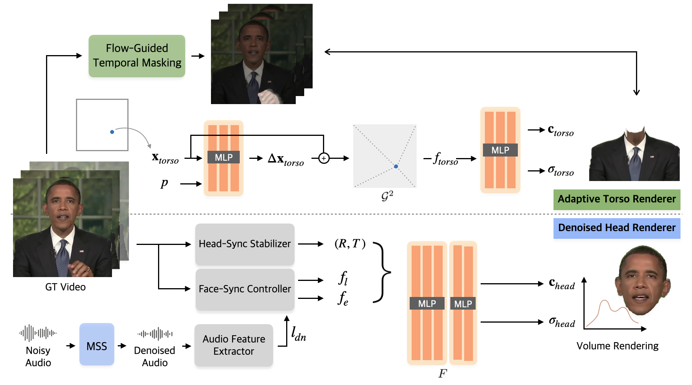
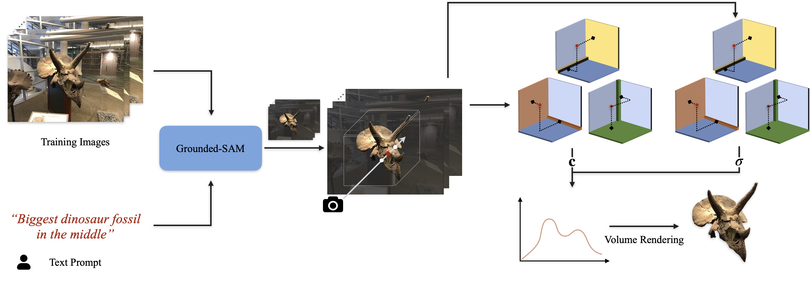
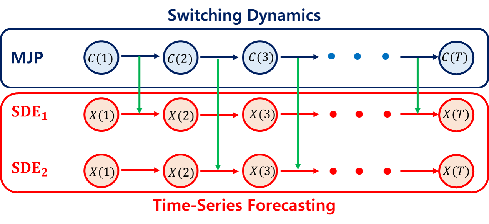
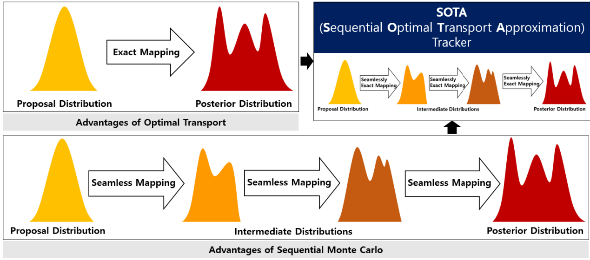

Seonghak Lee
I am a second-year M.S. candidate at Chung-Ang University, supervised by Prof. Junseok Kwon. Starting in December 2024, I am also working as a research intern at POLYGOM.
My research focuses on 3D Talking Head Synthesis, with a particular emphasis on solving challenges in uncontrolled, ‘wild’ scenarios. These include issues like extreme head poses, lighting variations, and occlusions, where traditional models struggle to maintain realism and natural expression. By applying advanced techniques in computer vision and deep learning, I aim to create robust 3D talking head models that perform reliably in real-world conditions. My broader interests also include 3D reconstruction and scene representation, with the goal of enhancing the realism and interactivity of digital human models for applications like virtual avatars and entertainment.
Email / GitHub / Google Scholar / LinkedIn / CV

Publications - Conference
* denotes equal contribution. † denotes corresponding author.

URHead: A Unified UV-Space Representation for Joint Mesh–3DGS Optimization in Head Avatars
The European Conference on Computer Vision (ECCV), Malmö, Sweden, 2026

Lightweight Wasserstein Audio-Visual Model for Unified Speech Enhancement and Separation
IEEE Automatic Speech Recognition and Understanding Workshop (ASRU), Honolulu, Hawaii, USA, 2025

Enhancing Sidewalk Maintenance through Accurate Joint Deflection Measurement
IEEE 43rd International Conference on Consumer Electronics (ICCE), Las Vegas, USA, 2025 — in collaboration with IRIS R&D Group Inc.

WildTalker: Talking Portrait Synthesis in the Wild
The 18th European Conference on Computer Vision Workshop (ECCV Workshop) — 3D Modeling, Reconstruction, and Generation in the Wild, Milano, Italy, 2024

POTF: Prompt-based Object-centric Tensorial Field
International Conference on ICT Convergence (ICTC) — Oral, Jeju, Korea, 2024
Publications - Journal

WildTalker∞: Pushing the Limits of 3D Talking Portrait Synthesis in Unconstrained Environments
IEEE Transactions on Audio, Speech and Language Processing (T-ASLP), vol. 34, pp. 1259–1271, 2026

VT-Surf: Visual Tracking with Switching Dynamics under Time-Series Forecasting
IET Electronic Letters, Vol. 61, 2025

SOTA: Sequential Optimal Transport Approximation for Visual Tracking in Wild Scenario
IEEE Access (ACCESS), Vol. 12, no. 1, pp. 177028–177037, 2024
Awards
- 2nd Place in 2023 Big Data Analytics Idea Contest by Sundo Soft
- 3rd Place in 2023 Big Data Analytics Idea Contest by HD Hyundai Site Solution